Black on a bedroom wall sounds like a bigger risk than it actually is.
The color itself isn't the hard part. Execution is. The same shade reads as either cave-like or genuinely luxurious depending entirely on lighting, texture, and what gets paired with it.
This covers both: why black actually works in a bedroom, and the specific choices that determine whether it lands.

Keep It Looking Good Long-Term
Matte and flat black finishes show dust and marks more visibly than a satin or eggshell finish would.
A washable or slightly higher-sheen paint in high-touch areas makes the room easier to maintain day to day.
Regular dusting on textured surfaces matters more here too, since texture is doing so much of the room's visual work.
It Works Regardless of Size or Budget
A small black bedroom isn't a limitation. It's often the easiest room to execute this look in, since fewer walls need the same careful planning.
A single accent wall in black delivers much of the same effect as a fully black room, for a fraction of the paint and commitment.
Budget-friendly swaps, a few textured pillows, a secondhand mirror, warmer bulbs, add up to most of the visual impact without a full renovation.
Keep the Other Colors Deliberate
Black pairs well with almost anything, but a tight, deliberate palette works better than an open-ended one.
Warm neutrals, deep jewel tones, or a single accent color each create a different mood while keeping black as the foundation.
The fewer additional colors in the mix, the more cohesive the final room reads.
Don't Overlook Mirrors
A mirror bounces whatever light exists back into the room, which matters more in a black bedroom than almost anywhere else.
An interesting frame also adds another texture and material to the room without competing with the wall color.
It's one of the simplest, most overlooked tools for making a dark room feel brighter without changing the paint at all.
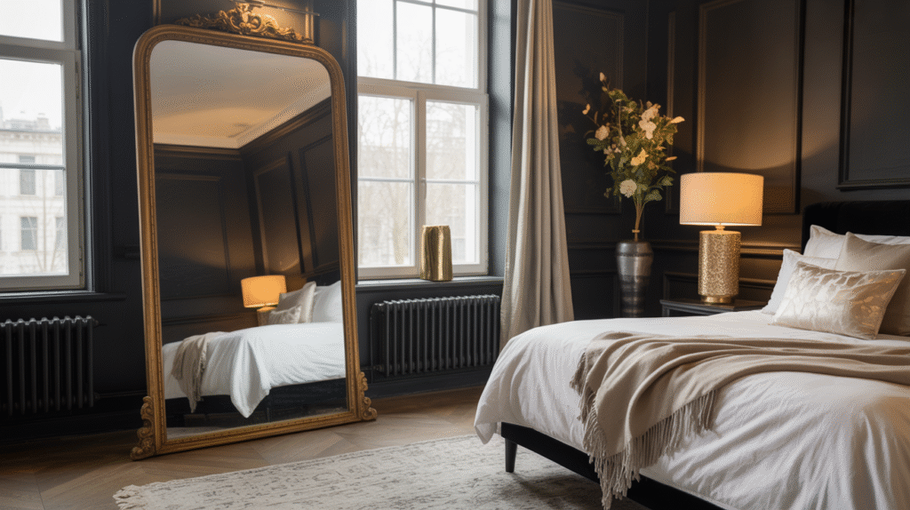
Add Warmth Without Losing the Drama
Warm metals, natural wood, and soft warm-toned lighting together do most of the work of keeping a black room from feeling cold.
This isn't about compromising the look. It's about executing it properly, since the "cold black room" problem almost always traces back to missing one of these elements.
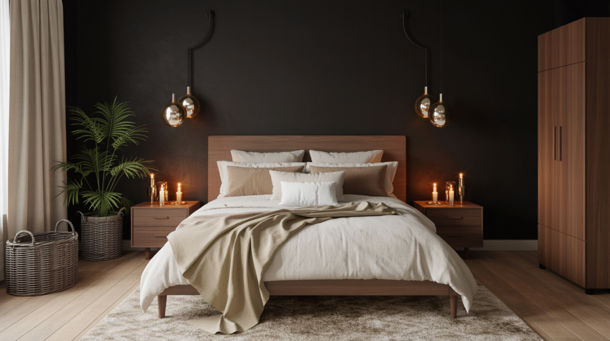
Let Small Accents Bring the Room to Life
A scattering of brass or gold hardware, a single piece of art, or one statement object all read more vividly against black than they would against any lighter wall.
Fewer, more considered accents work better here than many small ones competing for attention.
This is where the room's personality actually shows up.
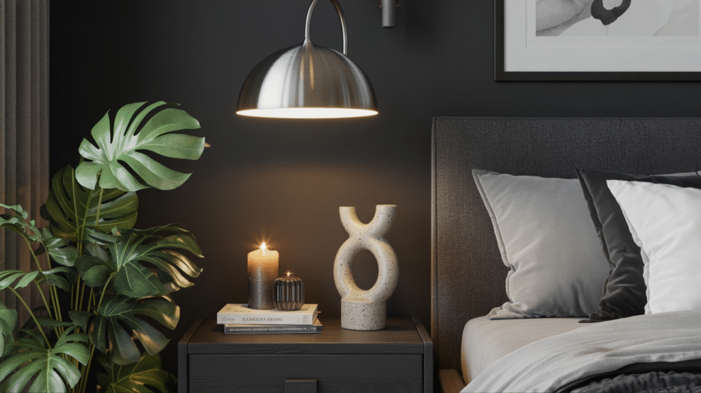
Let Bedding Soften the Mood
Bedding is one of the easiest ways to keep a black room from feeling severe.
Soft, layered textures in white, cream, or a muted tone immediately warm up the space without touching the walls at all.
This is also the easiest element to change later if the room ever needs a quick refresh.
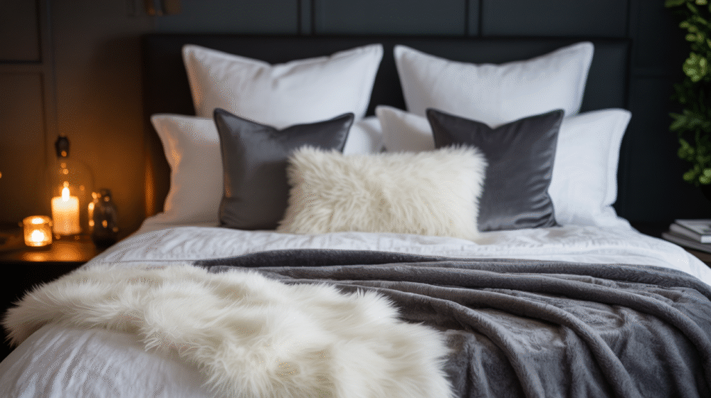
Pick Furniture That Works With Black Walls
Warm wood tones stand out more against black than they would against a lighter wall, which makes furniture choice matter more here.
Lighter-finished furniture creates a cleaner, more graphic contrast; darker wood leans the room moodier and more cohesive.
Either direction works, as long as the choice is deliberate rather than accidental.
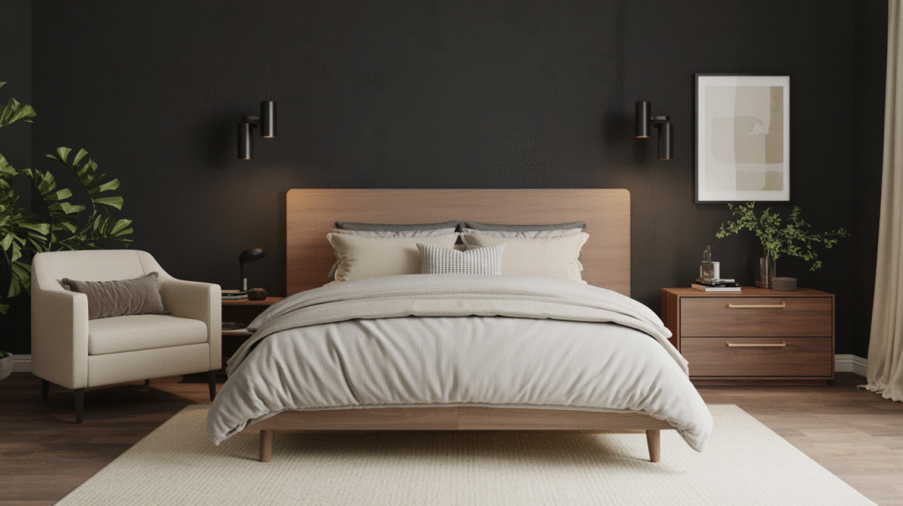
Balance the Darkness With Real Contrast
A fully black room with zero contrast risks feeling flat regardless of how good the lighting and texture are.
White or cream bedding, a light rug, or a single pale accent wall all give the eye somewhere to land.
This contrast is what keeps the room reading as dramatic rather than simply dark.
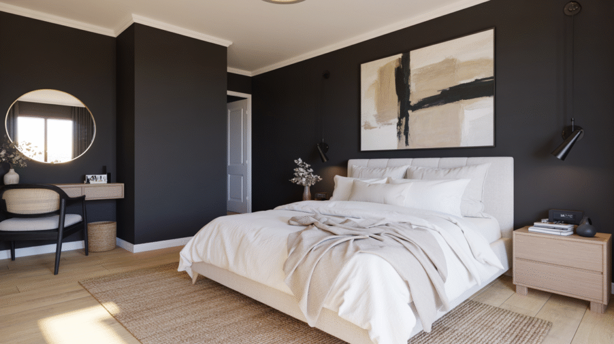
Let Texture Do the Heavy Lifting
A flat black surface with nothing else going on can feel one-dimensional.
Velvet, bouclé, a woven rug, a textured headboard, these keep the eye engaged in a way color alone can't.
This matters more in an all-black room than almost anywhere else, since there's no color variation doing that work instead.
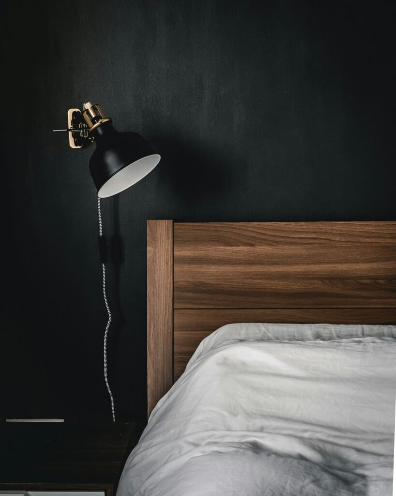
Lighting Is the Real Deciding Factor
Lighting does more to determine whether a black bedroom feels luxurious or oppressive than the paint color itself.
Layered, warm-toned lighting, a mix of overhead, lamp, and accent sources, keeps the room from feeling like one flat dark block.
A black room with only a single harsh overhead light will feel exactly as heavy as people fear. The same room with three warm light sources reads completely differently.
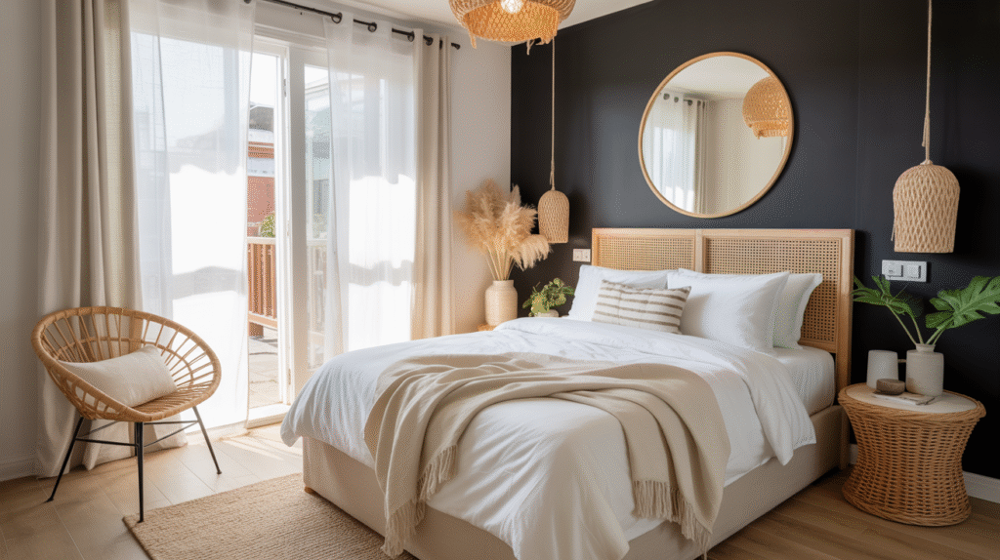
Choose the Right Shade
Not every black reads the same. A true, flat black feels different from a soft charcoal-black or a black with warm undertones.
A slightly warmer black tends to feel more inviting for a bedroom specifically, where the goal is restful, not stark.
Testing a sample on the actual wall, under the room's real lighting, matters more here than with almost any other paint color choice.
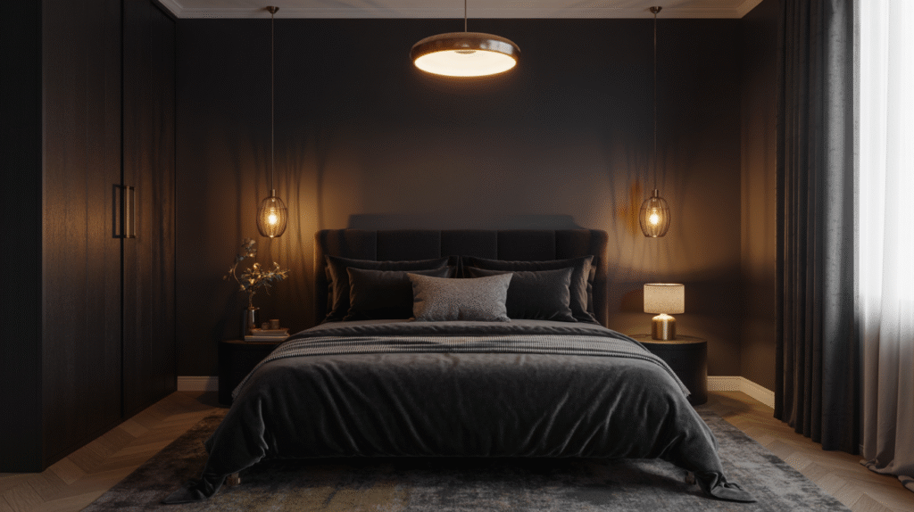
Clear Up a Few Myths First
The biggest misconception is that black automatically makes a room feel smaller. In practice, it often does the opposite. Without visible corners to register, the brain stops measuring the room's actual size.
Another common myth is that black only works in large bedrooms. A small room, properly lit, handles it just as well, sometimes better.
The idea that black feels cold or uninviting also doesn't hold up once warmth is layered in through texture and lighting.
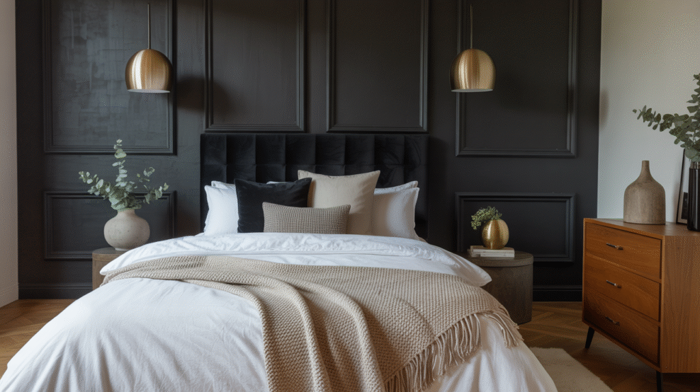
Understand the Psychology Behind the Color
Black absorbs light rather than reflecting it, which removes the visual edges of a room instead of highlighting them.
Without clear boundaries to measure against, a bedroom often feels more enveloping and calm at night, which is the opposite of what people assume before trying it.
This is part of why a black bedroom can feel more restful for sleep specifically, not just more dramatic for show.
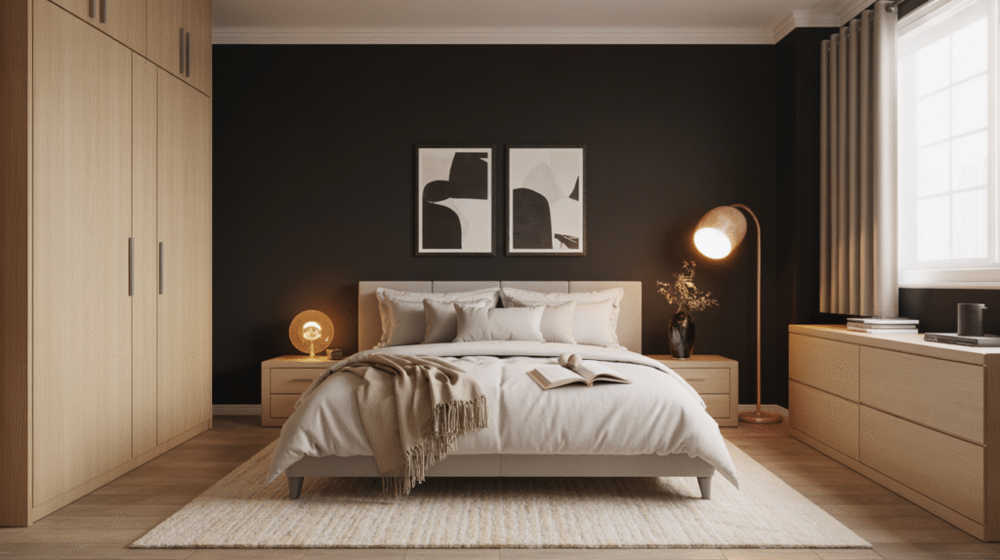
Why Black Bedrooms Have Real Staying Power
A black bedroom reads as confident rather than trendy once it's executed well, which is part of why the look keeps resurfacing rather than disappearing.
It's also one of the few color choices that genuinely changes how a room feels to be in, not just how it looks in a photo.
Black has moved from a niche, design-forward choice into something far more mainstream, as more people realize it doesn't require a huge room or a big budget to pull off.
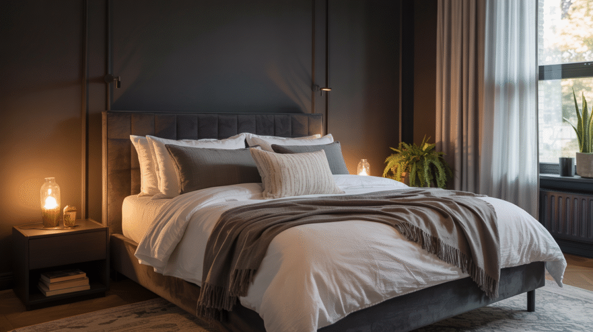
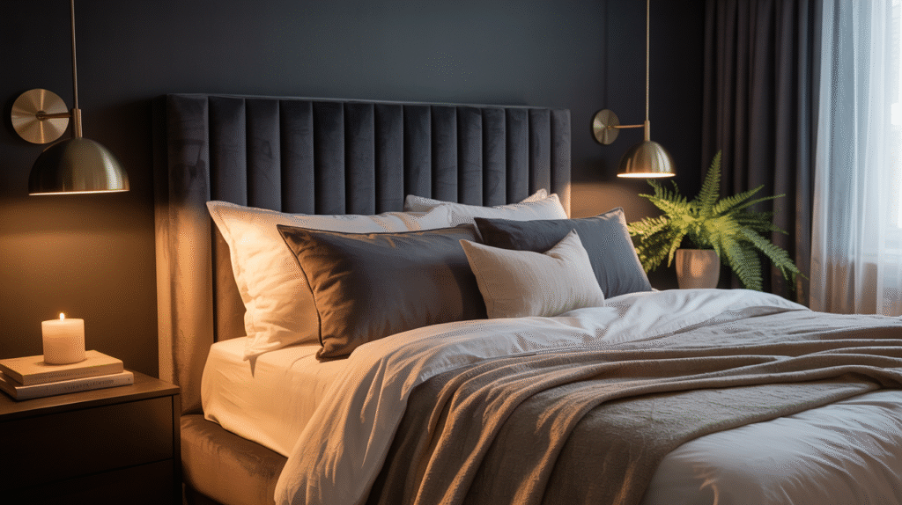
Plan the Lighting Before the Paint
A black bedroom isn't about being bold for its own sake.
Done with the right lighting, texture, and contrast, it reads as considered and genuinely restful, rather than just dramatic for its own sake.
Start with lighting and texture before committing to the paint itself. Those two choices matter more than the shade of black ever will.
The room genuinely rewards careful planning more than almost any other color choice you'll make in the house.